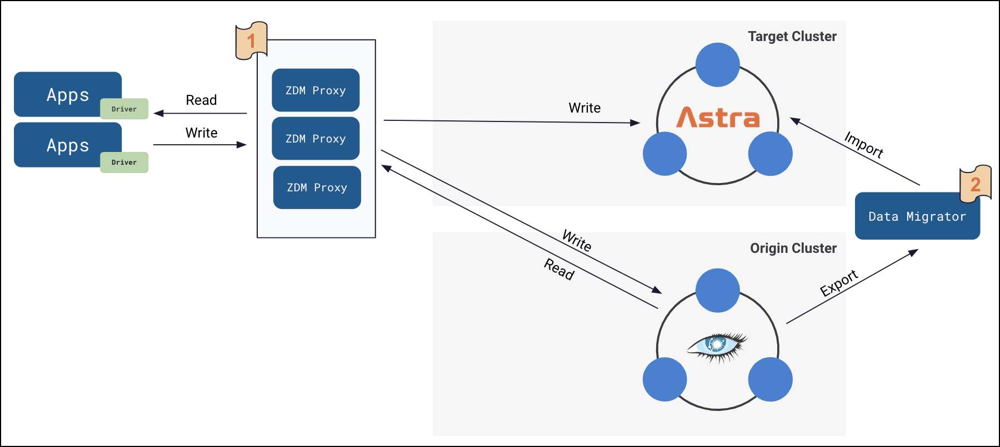

FAQs
If you’re new to the DataStax Zero Downtime Migration features, these FAQs are for you.
What is meant by "Zero Downtime Migration" (ZDM)?
ZDM means the ability for you to reliably migrate apps and data with no interruption of service.
In the context of migrating Apache Cassandra® or DataStax Enterprise (DSE) clusters (production apps & data), the topics in this guide focus on migrating with zero downtime to our cloud-native database environment, DataStax Astra DB.
ZDM lets you accomplish migrations without the need to change your application code. The suite of tools enabled you to both migrate traffic with a simple rollback mechanism, as well as the ability to migrate historical data.
Can you illustrate the migration process?
Here’s a high-level view:

What components are provided with ZDM?
DataStax Zero Downtime Migration includes the following open-source tools:
-
A proxy service called ZDM Proxy that operates between your existing ("origin") clusters and the new ("target") Astra clusters.
-
An interactive ZDM Automation utility that prompts for values needed to run an Ansible playbook, which create a dedicated deployment of the ZDM Proxy and its companion monitoring stack.
-
Additional self-service tools and Spark examples to copy data.
-
ZDM Bulk Migrator — enhanced from open-source DataStax Bulk Loader code — to migrate multiple database schemas and table rows.
-
Reconciliation scripts to validate successful completion of migration steps.
-
Well-defined steps in this migration documentation, organized as a sequence of phases.
What challenges does ZDM solve?
Cloud-native, managed services are great once you are able to fully migrate. Before DataStax ZDM was available, migrations often involved application changes, extensive migration preparation, and potentially a window of downtime to application users.
The ZDM tools from DataStax allow you to leverage mature migration tools that have been used with large scale enterprises and applications to make migrations transparent to application end users.
What exactly is the DataStax ZDM Proxy?
The DataStax ZDM Proxy is a simple and lightweight proxy that stands between the application and the source ("origin") cluster and Astra DB (or any CQL-compatible data store). ZDM Proxy’s ensures that every write operation (Insert, Update, Delete) is passed through to both clusters at the desired consistency level. If the write is successful in both clusters, it returns a successful acknowledgement to the client. If the write fails on either cluster, the failure is passed back to the client so that it can retry the write as appropriate, based on its own retry policy. This implementation allows for write consistency of new data to both clusters. The proxy also passes through reads to the origin cluster and returns the result to the application.
ZDM Proxy is highly available. It can be scaled horizontally so typical deployments can be made up of a minimum of 3 servers. ZDM Proxy can be restarted in a rolling fashion; this capability means you can roll out configuration changes for different phases of the migration.
What are the benefits and use cases?
You may want to migrate your existing Cassandra or DSE database to a managed service such as DataStax Astra. Other scenarios are supported. For example, you may want to migrate from an older version of Cassandra or DSE to a much newer version, without intermediate upgrades and with simple rollback options. And/or you may may want to split out an application from a shared cluster to be backed by its own cluster.
Bottom line: you want to migrate your critical database infrastructure without risk or concern that your users' experiences will be affected.
What is the pricing model?
The suite of ZDM tools from DataStax is free and open sourced.
Is there support available if I have questions or issues during our migration?
The ZDM Proxy software is supported by DataStax Support.
Additional examples serve as templates, from which others can learn about migrations. As open source, DataStax does not assume responsibility for making the templates work for specific use cases.
Where is the ZDM open source code?
(Author’s note: the URLs will change when these GH repos are public)
-
ZDM Proxy GitHub repo
-
Proxy automation GitHub repo
-
ZDM Bulk Migrator GitHub repo
-
This source documentation GitHub repo
-
From the Asciidoc markdown sources, the build & deployment scripts write the docs to this documentation site.
-
The draft HTML5 docs are temporarily on an internal server, which requires VPN access. For the external release, the ZDM-Proxy 2.0 docs will reside on docs.datastax.com.
-
What’s next?
Learn about the steps to Prepare your existing clusters in the first phase of the migration.